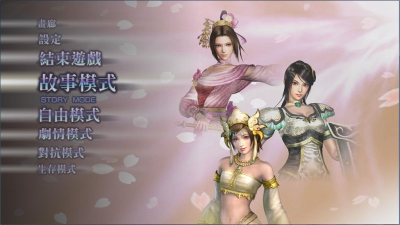

壁紙篇 在「主選單」→「畫廊」→「桌布一覽」裡，可以挑選「桌布」做為背景圖。 桌布也是一種獎勵，每位角色有 6 張桌布可以蒐集，且遊戲還另外提供 3 種可以自行調配的特殊桌布。  【因為看膩了預設的選單畫面，所以特殊桌布讓人覺得美輪美奐。】 角色桌布蒐集條件 １、角色入手後。 ２、角色的特技全習得。 ３、角色熟練度 20。 ４、角色熟練度 30。 ５、角色熟練度 40。 ６、角色熟練度 50。 特殊桌布蒐集條件 １、「故事模式」全關卡通關完成。（也有人說蒐集 30 個素材） ２、「劇情模式」全關卡通關完成。 ３、「故事模式」及「劇情模式」全難度通關完成。（也就是每關卡的四種難度都要 CLEAR，不過別擔心，天舞裝上去就知道其實很簡單了。）